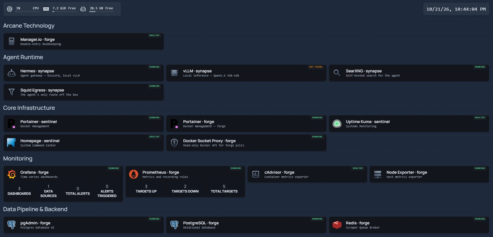
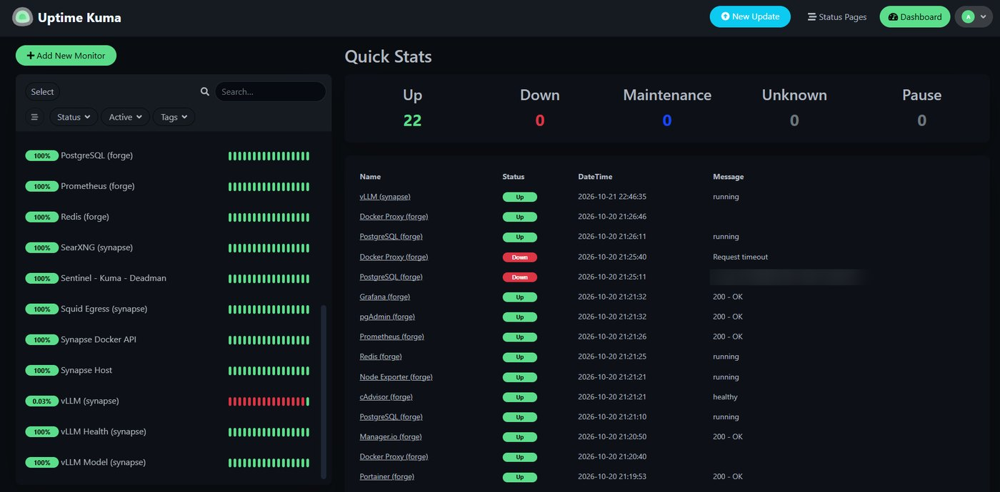
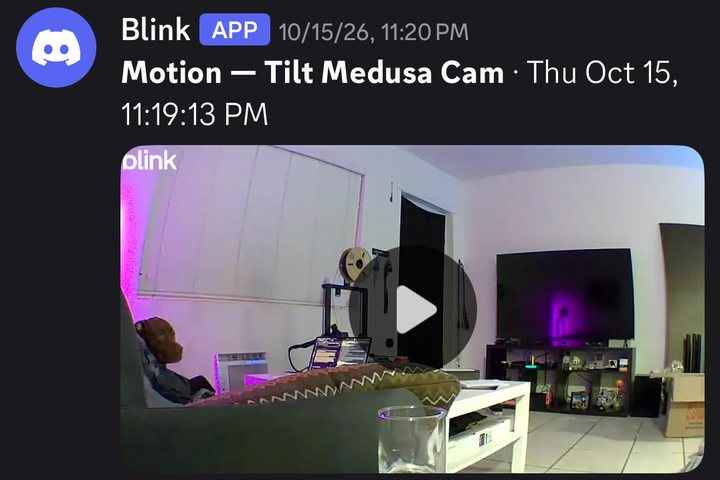
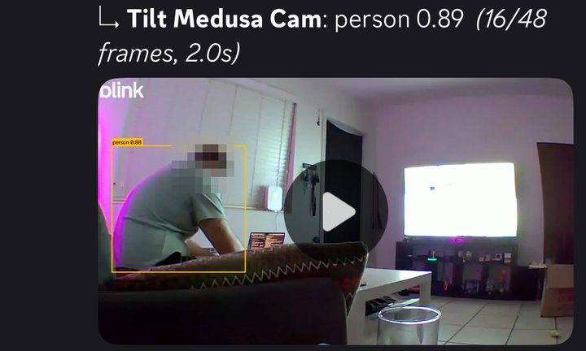
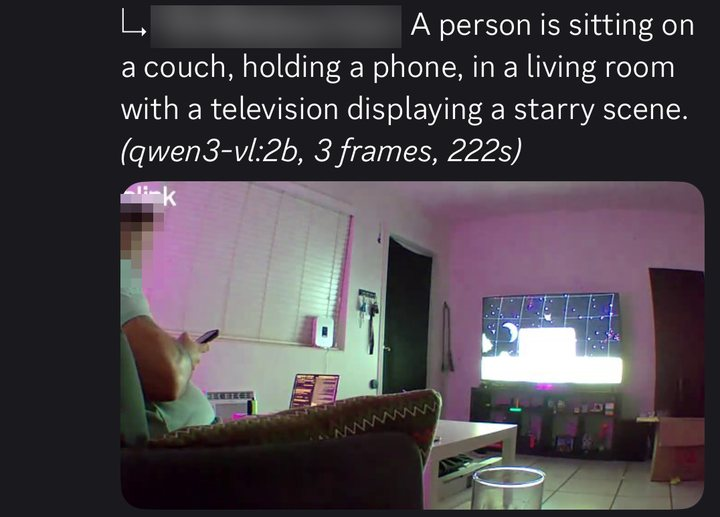
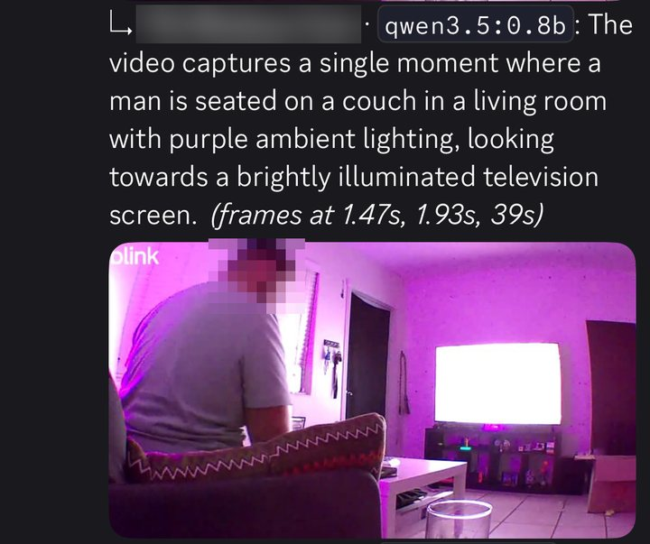
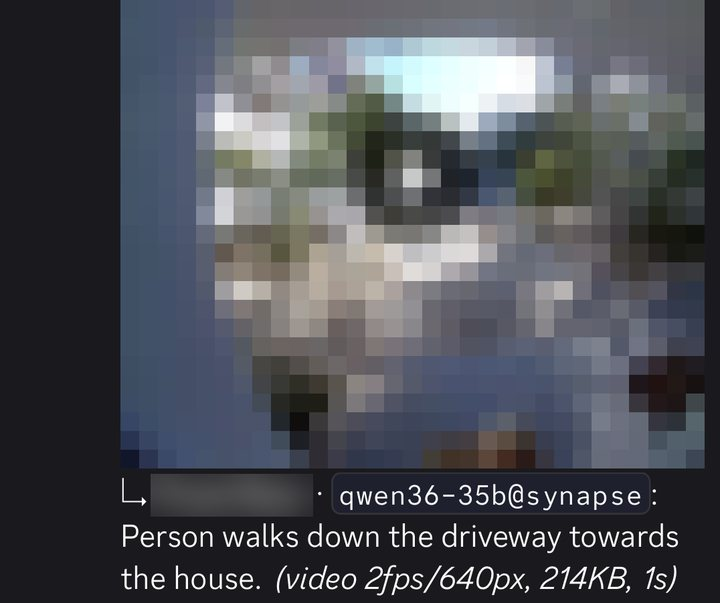
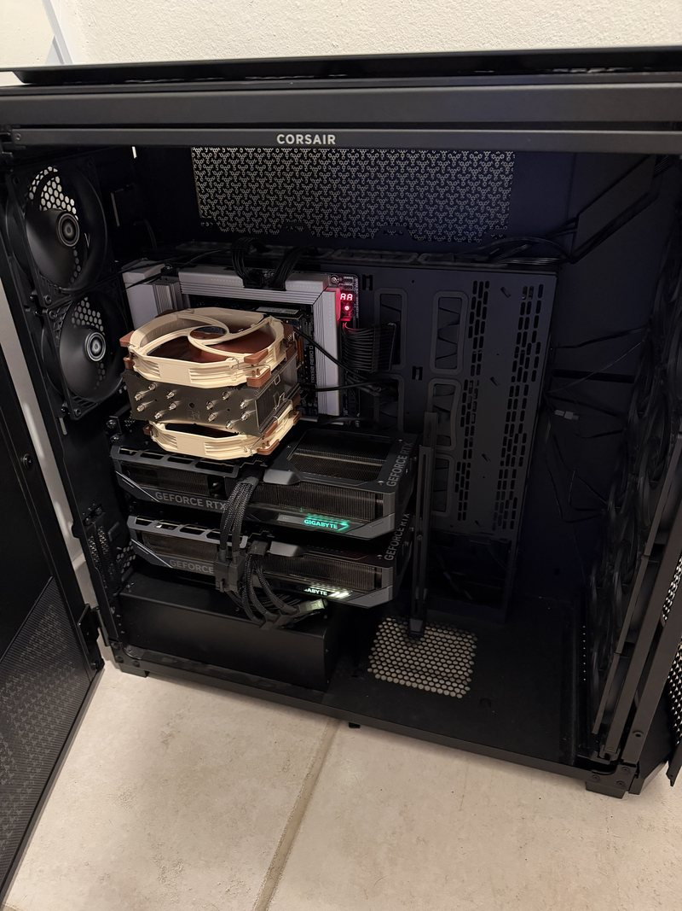

My homelab, run like production. An OptiPlex holds every byte of state, a Raspberry Pi watches it, and a dual-GPU Threadripper runs a 35B model on local hardware. Nothing is open to the internet, and every decision is written down, including the ones that turned out wrong.
- 3
- nodes, each trusted with one kind of work
- 0
- ports open to the internet
- 35B
- parameter model on local GPUs
- 1s
- camera clip to plain-English sentence
Architecture
| sentinel — Pi | forge — OptiPlex | synapse — Threadripper | |
|---|---|---|---|
| Hardware | Raspberry Pi, microSD | i7-7700T (35W), 16GB, NVMe | 9960X, 2× RTX 5070 Ti 16GB, 32GB |
| Job | Alerting, front door | All state, metrics | Inference, agent |
| Failure mode | SD card death | OOM, disk fill | GPUs on another job |
| Trusted with | Saying something is wrong | Anything that must survive a reboot | Work that can be skipped |
Why the work is split this way
forge holds anything that must survive a reboot. Databases, the queue broker, bookkeeping, metrics history and the camera archive. It is the box with the real availability guarantee and fast local storage, so it is the only node trusted with state.
sentinel exists to watch the others. ~5W, separate power, separate storage, separate failure modes — so when forge falls over, the thing that says so is not part of the outage (ADR-0001). The service dashboard lives here too: a front door that dies with the box it points at is not useful.
synapse does the GPU work, and nothing critical waits on it. It serves the agent's model and enriches other pipelines, but it is treated as optional: it gets torn down for benchmarking, and its GPUs get lent to other projects. Every consumer is built so that synapse being down costs a feature, never an alert.
What is running
Containerized, each node with its own Portainer, every service addressed by Tailscale name:
| Node | Role | Component |
|---|---|---|
| sentinel | Uptime monitoring and alerting | Uptime Kuma |
| sentinel | Service dashboard (sees all nodes) | Homepage |
| forge | Metrics and dashboards | Prometheus, Grafana, node-exporter, cAdvisor |
| forge | Relational database, queue broker | PostgreSQL with pgAdmin, Redis |
| forge | Double-entry bookkeeping | Manager.io |
| forge | Camera ingest, archive, alerts | blink-watch + detector (custom) |
| forge | Boot-time self-repair | docker-port-healer (systemd) |
| synapse | Local inference | vLLM — Qwen3.6-35B-A3B, NVFP4, 2-GPU |
| synapse | AI agent (Discord) | Hermes Agent |
| synapse | Agent egress allowlist, search | Squid, SearXNG |
| forge, synapse | Read-only Docker API for the dashboard | docker-socket-proxy |




Project — Blink smart alerts
Blink's cameras record to a USB drive on the Sync Module for free, but anything smarter than "motion happened" sits behind a subscription. This pipeline pulls each clip off the module, archives it on forge, alerts on Discord, and then has the local model on synapse describe what is in it — a one-line push notification like "Delivery driver leaves a package at the front door."
How a clip moves
- Ingest on forge. A watcher polls the Sync Module's local-storage
manifest through
blinkpy, downloads each new clip, and files it as camera / date / time with a JSON sidecar recording every timing. - Alert immediately. The raw clip is posted to Discord the moment it lands. The alert never waits on AI — that is the one hard constraint.
- Describe in the background. A detector service re-encodes the clip small (2 fps, 640px, no audio — this bounds tokens per clip and drops a broken first packet Blink writes) and sends the whole clip, as video, to vLLM on synapse.
- Follow up. The one-sentence description posts as a reply under the alert and is written into the sidecar. If synapse is down, the clip still saves and still alerts — it just gets no description. No fallback, by choice.
How it got there — three designs in two days
Object detection first. YOLO26n through ONNX Runtime on two of forge's CPU threads, posting a copy of the clip with boxes drawn. It proved the plumbing and kept up easily, but a boxed video on a phone answers nothing a sentence does not answer faster.
Then small vision models on forge's CPU. 0.8B–2B VLMs, single frames, then three frames chained with notes carried between them. Accurate enough, but 39–224 seconds per clip on a 35W quad-core — a description that arrives four minutes after the alert is history, not a notification.
Then the cheapest option, checked last when it should have been first: the 35B model synapse already serves for the agent accepts video natively; vision had simply been switched off at launch. Turning it on cost nothing measurable — agent throughput 238 vs 240 tok/s, the same reasoning and retrieval scores, roughly the same VRAM — and the first real clip was described in 2.6 seconds. No second model, no extra GPU memory, and the CPU experiments were deleted.
The same Discord channel across all four stages, unedited apart from cropping. Each reply's own footer is the receipt: model, frames, and how long it took.





222 seconds down to one.
Faces, camera names and the exterior view are obscured. The captions are what matter.
Bugs worth keeping
- Blink lies about frame rate. The reported rate is far above the real (low, variable) one, so frame-index arithmetic put second 3 of a 10-second clip past the end of the file. Frames are now picked by real presentation timestamp.
- New cameras were silently dropped. The library learns camera names once at startup and discards clips from any camera it does not know. Unknown cameras are now accepted and trigger a re-read of the camera list from the cloud.
- Renaming a camera re-posted its entire history. Seen-clip keys included the camera name. They now key on recording time alone, and anything older than an hour is marked seen rather than posted — alerts are for what is happening now.
- Polling made the app say "system busy". Every manifest poll is a command the Sync Module must process, and it collides with arm/disarm. A 48-hour probe logged every read-only cloud endpoint on change and scored each field's precision and recall against real clips, to find a cloud-side motion signal that can gate the poll. Choosing the trigger from that data is the open step.
- A login storm. A fatal error under
restart: unless-stoppedre-logged into Blink every second. Fatal paths now back off ten minutes before exiting.
Tradeoffs, stated plainly
Latency is minutes, not seconds — a clip appears only after recording finishes and the module uploads it. Clips transit Blink's cloud on the way down, so this is not fully local. The API is unofficial and one manifest read uses a private library attribute, so the library is pinned to a known commit. The YOLO stack is AGPL — fine privately, not something to hand a client. And the archive is a single copy on one NVMe with no retention policy yet, which is the backups gap below.
v2 — a Pi Zero 2 W where the USB drive was
Designed, not built. One unverified assumption decides whether it works at all.
Most of v1's problems come from one fact: the clips sit on a drive only the Sync Module can read, so every clip has to be asked for through Blink's cloud. v2 removes that. A Raspberry Pi Zero 2 W plugs into the Sync Module's USB port and presents itself as a USB drive (Linux USB gadget mode), backed by a disk image on the Pi's own storage. The Sync Module records to it as it does to any drive, and the Blink app keeps working. But the Pi can see each file the moment it is written, and send it to forge over Tailscale. The Pi keeps nothing: it forwards clips and keeps only a short buffer.
| v1 problem | What v2 changes |
|---|---|
| Latency is minutes | No upload round-trip. Seconds after the clip is closed, bounded by how often the Pi re-reads the drive. |
| Clips transit Blink's cloud | Clips go from the camera to the Sync Module, then the Pi, then forge. Fully local. |
| Polling makes the app say "system busy" | No commands are sent to the Sync Module at all. The 48-hour probe for a cloud motion trigger becomes unnecessary. |
| Unofficial API, private attribute, pinned library | No Blink account in the ingest path. No login, no tokens, no 2FA, no login storms. |
| New or renamed cameras | Depends on how the module names files on the drive. Unknown until it is looked at. |
| Single-copy archive | Unchanged. That is the backups work, not this. |
Checked before anything is bought, in this order:
- Are the clips readable on the drive? Blink's documentation suggests clips stored on the drive cannot be played on a computer, which would mean they are encrypted. If so, v2 does not work as designed and v1 stays. This is a 10-minute test: copy a few clips off the current drive and try to open them.
- Reading a drive someone else is writing. In gadget mode the Sync Module owns the filesystem, and the Pi reading the same image underneath it can see half-written or stale data. The usual approach is a read-only mount refreshed on a short interval, only taking files that have stopped growing. Unplugging and replugging the drive virtually to copy is the fallback, but the module may react badly to its drive vanishing.
- Power. The Pi running Wi-Fi may draw more than the Sync Module's USB port supplies. A separate power supply is likely.
- SD wear. Continuous video writes to a microSD card are the same problem sentinel already has. Use a high-endurance card, and treat the Pi as disposable.
Cost is roughly a Pi Zero 2 W and a card. Under the spend rule it fixes faults that exist now (cloud transit, "system busy"), so it would pass, but only after the first check comes back clean.
| Stage | State |
|---|---|
| Clip ingest, archive, Discord alert | Running |
| Descriptions from synapse's vLLM | Running |
| Cloud-side motion trigger to replace polling | Analysing probe |
| v2: Pi Zero 2 W as the drive, fully local | Verify clip format first |
| Filter alerts (e.g. people only) | After a trust period |
| Archive to a NAS | When the NAS exists |
| Home Assistant reading the same archive | Later |
Local AI — synapse
A fully local agent on a fully local model, reachable over Discord, with web search and no paid APIs in the steady state.


- Inference: vLLM serving Qwen3.6-35B-A3B at NVFP4, tensor-parallel across both 16GB cards, 262K context, vision enabled. Chosen over a dense 27B after a benchmark tied them on reasoning and tool use at 238 vs ~102 tok/s and 262K vs ~88K context.
- Tuned from failures, not defaults. The speculative-decoding draft head requested unprofiled memory and OOM-crashed vLLM twice, so it is off. Automatic KV-cache sizing left ~76MB free per card, so the cache is a fixed size with real headroom. Prefix caching caused long-prompt hangs on this hybrid architecture, so it is off.
- Agent: Hermes Agent in a container — non-root, no Docker socket,
no-new-privileges, 4GB and 512-PID limits. Only allowlisted Discord users can command it, and memory or skill writes need explicit approval before they persist.
$ nvidia-smi
Thu Oct 22 02:41:34 2026
+-----------------------------------------------------------------------------------------+
| NVIDIA-SMI 595.91.07 Driver Version: 595.91.07 CUDA Version: 13.2 |
+-----------------------------------------+------------------------+----------------------+
| GPU Name Persistence-M | Bus-Id Disp.A | Volatile Uncorr. ECC |
| Fan Temp Perf Pwr:Usage/Cap | Memory-Usage | GPU-Util Compute M. |
| | | MIG M. |
|=========================================+========================+======================|
| 0 NVIDIA GeForce RTX 5070 Ti Off | 00000000:81:00.0 Off | N/A |
| 0% 31C P8 9W / 300W | 15612MiB / 16303MiB | 0% Default |
| | | N/A |
+-----------------------------------------+------------------------+----------------------+
| 1 NVIDIA GeForce RTX 5070 Ti Off | 00000000:C1:00.0 Off | N/A |
| 0% 30C P8 8W / 300W | 15612MiB / 16303MiB | 0% Default |
| | | N/A |
+-----------------------------------------+------------------------+----------------------+
+-----------------------------------------------------------------------------------------+
| Processes: |
| GPU GI CI PID Type Process name GPU Memory |
| ID ID Usage |
|=========================================================================================|
| 0 N/A N/A 192195 C VLLM::Worker_TP0 15602MiB |
| 1 N/A N/A 192196 C VLLM::Worker_TP1 15602MiB |
+-----------------------------------------------------------------------------------------+
Containment is the network, not the tooling
Prompt injection steering a tool call cannot be filtered out of web content
reliably, so the design limits what an injected agent can do rather than what it
can read. The agent sits on a Docker network created --internal: no gateway,
no NAT, no route off the box. Squid and SearXNG are the only containers on both that
network and an uplink, so they are the only exits, and Squid allows HTTPS to Discord
and five exact GitHub hosts — nothing else. Package indexes are deliberately blocked.
Dropping a proxy setting costs the agent its egress instead of granting it free
egress.
The read-only Docker API the dashboard uses is deliberately off the agent's network; reaching it directly, through the proxy, and by container name was each verified to fail.
Residual risks, written down rather than implied away: the Discord token is readable inside the agent's container (a credential-injecting proxy would fix it and is not built); the shell tool can write anywhere in the container, so the container is the sandbox; fetched URLs and search queries are small exfiltration channels; and the model API is open to every tailnet device without a key, the price of letting the watchdog health-check it.
Next phase, not running yet: Hermes builds, Claude reviews.
Hermes takes a scoped task in Discord, works on a branch and opens a pull request —
never pushing to main. Claude Code reviews it; the review goes back to Hermes
or the PR is merged by hand. Waiting on a fine-grained token limited to selected
repositories, contents and pull requests only, with a short expiry.
Operational practice
Conventions applied across every compose file in the private config repo:
- Every container has a
mem_limit. A 16GB host with unbounded containers is an OOM waiting to happen. The camera detector is additionally capped at two CPU threads so a burst of clips cannot starve the databases. - Versions are pinned where a rebuild depends on them — the inference server,
the metrics stack, the egress proxy, the camera library. Several web front-ends and
the agent image still track
latest; that is a known gap, not a policy. - Config is bind-mounted, state lives in named volumes. Config is in git; state deliberately is not. The repo plus a Tailscale login is the rebuild path.
- Reachability is a firewall property, not a bind-address property. Docker continues to listen on all interfaces so containers can reach one another and the host; the packet filter is what decides who gets through.
- Services address each other by Tailscale MagicDNS name, not IP. Moving a service between nodes becomes a volume copy rather than a config rewrite. Names are set explicitly at join time — Tailscale otherwise derives them from the OS hostname, and they silently stop matching the configs. That has cost an hour once.
- Secrets never reach the repository.
.envis gitignored,.env.exampledocuments every variable with placeholder values, andgitleaksruns against staged changes before every push. - Agents propose, a human executes. AI-assisted changes land as reviewable commits and scripts; destructive commands and deployments stay human-gated.
Network security model
The design goal is that nothing is reachable without authenticating first, and that being on the same physical network grants nothing at all.
- Tailscale is the only transport between nodes. A WireGuard-based mesh carries all inter-node traffic. There is no port forwarding on the router, no reverse proxy exposed to the internet, and no public ingress of any kind. The camera pipeline is outbound-only and publishes nothing.
- Access is authenticated per device, not per network. A machine reaches services because it has authenticated onto the tailnet — not because it happens to sit on the right LAN. Revoking a device removes its access everywhere at once.
- The firewall is the enforcement boundary. External traffic is filtered in the
DOCKER-USERchain — evaluated ahead of Docker's own accept rules — so only packets arriving over the Tailscale interface reach a published port. Host SSH is restricted to the same interface via UFW. - The dashboard never gets a raw Docker socket. It reads container state
from each node through a read-only socket proxy, because a
docker.sockover the network is root on the node holding all the state. - The agent is contained by topology. An internal-only network with a single allowlisting proxy as its exit — see Local AI above.
Closing a real gap: Docker's firewall bypass
The tailnet-only property was originally enforced by convention — every published port was expected to carry an explicit bind address. Auditing it showed that convention was not holding, and published container ports were reachable from the LAN.
The cause is a well-known and easily-missed Docker behaviour: publishing a port
inserts iptables rules that are evaluated before the chain UFW manages. A
deny incoming default policy therefore does not block a published container
port. UFW reports the host as locked down while Docker has already accepted the
traffic.
That is the worst class of security bug in a homelab — not an open port, but a
system that reports itself as closed while it is open, so everything built on
top of it inherits a false assumption. The fix was to stop treating bind
addresses as a security control and put enforcement in the packet filter
instead: rules in the DOCKER-USER chain admit only traffic arriving over the
Tailscale interface, and host SSH is locked to that same interface with UFW.
The tradeoff is deliberate and worth stating: enforcement is now a single control rather than layered. Because the listening sockets remain open on all interfaces, the firewall rules are load-bearing, which makes their persistence across reboots and Docker restarts a first-class operational concern rather than a detail.
Recorded as ADR-0002, with a runbook covering verification — which has to be done from a LAN host that is not on the tailnet, since checking from the host itself passes trivially and proves nothing.
Planned hardening: single sign-on in front of the web interfaces, and tailnet ACLs restricting which device may reach which service — which would also close the keyless model API.
Architecture decisions
Decisions are recorded as ADRs at the time they are made, and amended or superseded in place when they stop being true — rather than quietly rewritten. The configs show what runs; the ADRs record why, including the ones that turned out wrong.
ADR-0001 — alerting must not share a failure domain with what it watches. Uptime Kuma started on forge, which made forge a single point of failure for knowing whether forge was up. It moved to the Pi. Prometheus and Grafana briefly followed it there and then moved back: they answer "what was memory doing before the crash", which is read afterwards from a box that is back up. The argument was always about notification, not diagnosis, and the ADR stands as written.
ADR-0002 — reachability is enforced in the firewall. See the featured panel above.
ADR-0003 — contain an agent at the network layer, not just in config. Written for an earlier runtime on forge and now superseded, but its reasoning — internal-only network, proxy as sole exit, fail closed — is exactly what synapse runs today.
ADR-0004 — use the agent's built-in memory, not a vector database. The plan picked a vector store on the premise that built-in memory was keyword-only. Installing it showed the premise was wrong on every point: the built-in engine already did hybrid keyword-and-vector search over plain markdown files, and the vector store held zero rows for its entire life while the built-in system quietly did the work. The ADR exists so the reversal is recorded rather than rediscovered.
zero rows. the whole time.
ADR-0005 — split runtimes by trust zone, then collapse back to one. A research runtime and an execution runtime, separated by a human-moved file. Once the local agent proved it could do both jobs, the second runtime was removed as redundant and the ADR amended — including the parts of its security section that were never actually built.
Building synapse was not justified by the spend rule, and that is written down. Hardware here must fix a fault that exists now, remove a ceiling actually being hit, or pay back within about six months. The GPU node was built on other grounds. That is a legitimate decision — but the rule is not allowed to be quietly treated as though it passed.
yes, I know.
The camera pipeline puts ingest on forge and AI on synapse. Clips are state, and state lives on forge's NVMe, not the Pi's microSD. Descriptions are enrichment, so they live on the node allowed to disappear.
Migrations and incidents
- The drive fell asleep and took the filesystem with it. Every Uptime Kuma monitor pointed at forge went red at once, except one. The NVMe drive's power saving had let it drop into its deepest sleep state, and it came back read-only: any process that touched the disk, to read or to write, failed. The one monitor that stayed green was watching a process that happened to be running entirely from memory, with no disk I/O, so it kept answering while everything around it was down. A power cycle brought the drive back, and a custom rule now keeps it out of that deep sleep state. Two lessons: a green check proves only the path it exercised, and the drive holding all of forge's state is one more argument for the backups that do not exist yet.the survivor never touched the disk
- A power surge broke every published port — the services were fine. After an unclean shutdown, every container on forge restored with correct port config but no live port mappings: every monitor red, every service healthy. Docker's network state is not crash-safe, and neither restarting containers nor the daemon rebuilds it — only recreating the container does. Confirmed by elimination on the box, then fixed with a boot-time healer that recreates only containers whose bindings are configured but not live. A no-op on a clean boot. It found one more problem on the way: a container started by hand, with no compose metadata, could not be recreated at all — so it became a compose stack too.every light red, every service fine
- Built the GPU node and moved inference onto it. A dual-GPU Threadripper now serves the agent's model locally, on a node that is always on by design, with hosted APIs no longer part of the steady state.
- Agent runtime, three reversals. One runtime chosen, reversed for another, split into two by trust zone, and finally collapsed to one local agent on synapse. The removed runtime's config was deleted from the repo rather than left as files for a stack that will not exist.
- Uptime Kuma and Homepage → Pi. Done, per ADR-0001. Because every monitor targets a MagicDNS name rather than an IP, the move was a volume copy rather than a rewrite.
- Docker firewall lockdown. Audited the tailnet-only invariant, found
published container ports reachable from the LAN, and moved enforcement into
DOCKER-USER. See ADR-0002. - Removed a container that did nothing. A browser worker ran
tail -f /dev/nullagainst a directory that never existed in git — Docker created it empty on every deploy. Deleted rather than propped up. - OptiPlex board replacement and 8→16GB RAM upgrade. Fixed a real fault and lifted a ceiling that was actually being hit, which is what justified it.
- Monitoring rollout. Prometheus recording rules pre-compute the values the dashboard displays, because the widget passes PromQL in a URL query string and long expressions become an encoding problem.
Build status
Built in public. This is a live project, so the page separates what runs today from what is next — nothing below is listed as running unless it is.
Three-node split with workloads placed by node reliability. Tailscale-only mesh enforced in the firewall (ADR-0002). Independent alerting and dashboard on the Pi. Stateful stack, metrics and bookkeeping on forge, every container under a memory limit, with boot-time port self-repair. Local 35B inference and a network-contained agent on synapse. Blink camera alerts with AI descriptions. ADR practice and secret scanning on every push.
Choosing a cloud-side motion trigger for the camera pipeline from the 48-hour
probe data. Agent-opens-PR, Claude-reviews workflow, pending a scoped token.
Pinning the images that still track latest.
Data backups — the largest unaddressed risk: databases, documents, monitoring history and the camera archive are single-copy today. Designed as peer-to-peer nightly snapshots across nodes, with quarterly restore tests. Then DNS filtering, single sign-on and tailnet ACLs, a fully local Blink v2 on a Pi Zero 2 W, people-only camera alerts, and a NAS once peer storage runs out.
Note on scope
This is the public view. The configuration itself, runbooks, network addressing, port bindings and firewall rules live in a separate private repository.